好像没有一种单品，
像卫衣一样
可以随意得像在自己家卧室，
也可以时髦到让人目不转睛。
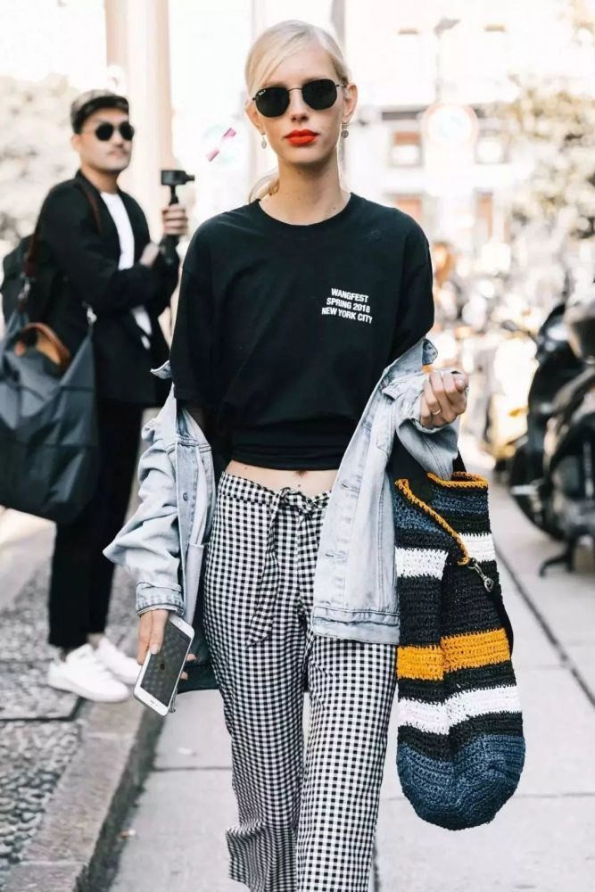
为什么卫衣这么火？
01
随意舒适
卫衣是难得的
不费力赢很大单品，
随随便便就能穿出高级感。
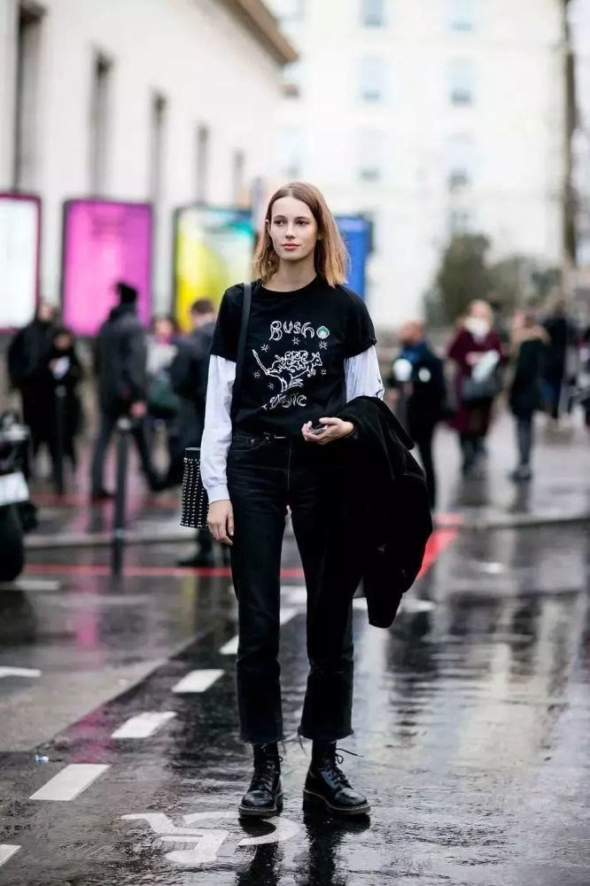
02
百搭经典
卫衣的百搭力，
也是其他单品不可匹敌的，
几乎没有卫衣搭不上的，
穿搭小白必入！
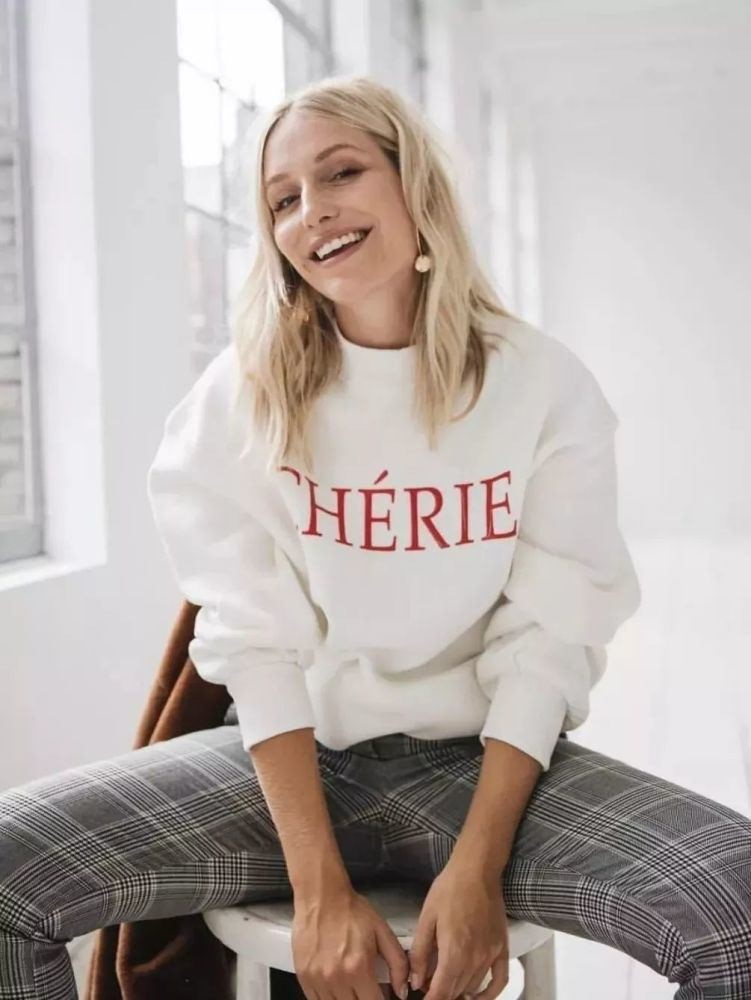
03
青春减龄
卫衣超级减龄，
穿上卫衣的你还可以伪装18岁！
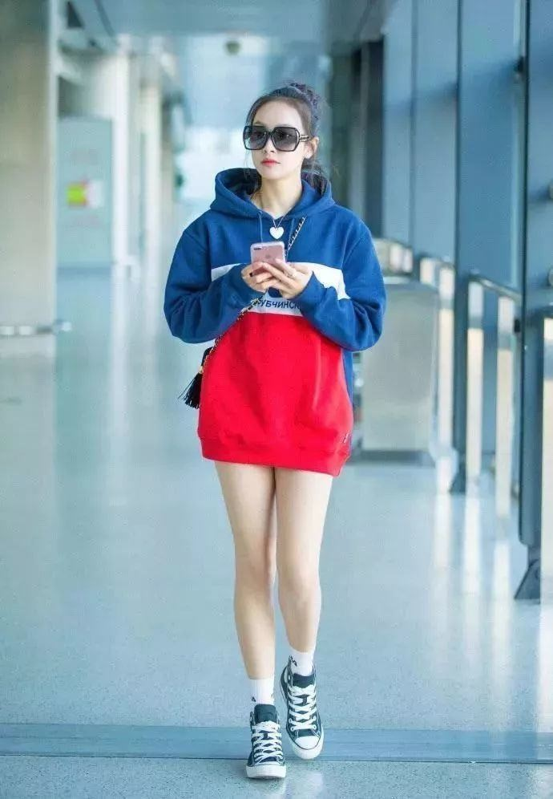
卫衣如何穿搭
01
+半裙
卫衣搭配半身裙，
娘Man风的绝美Look，
任何身材都可以驾驭。
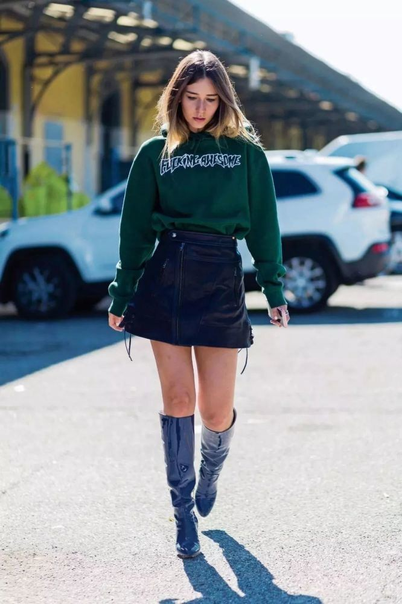
你可以用硬朗的卫衣，
与柔美的裙装
打造出高级的层次感，
人群中绝对的焦点～
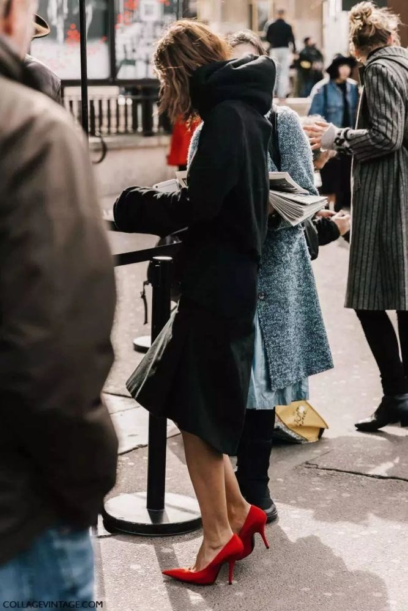
色彩搭配还是以
同色系最为好穿～
完全不挑人。
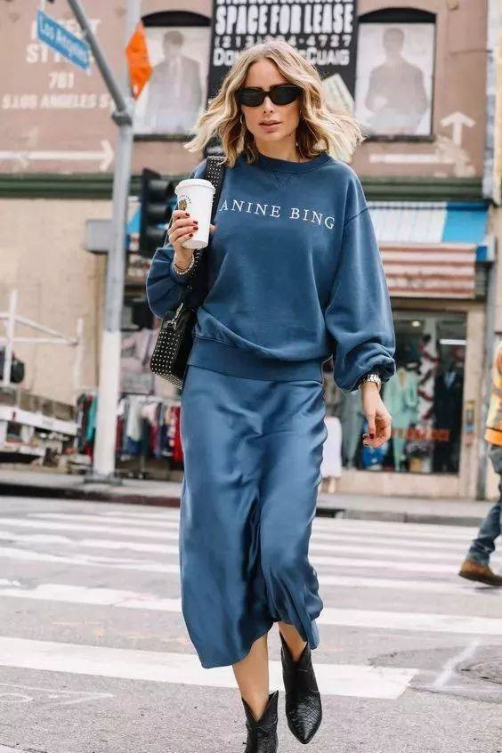
02
+阔腿裤
阔腿裤与卫衣的组合，
就是四个大字，
气场开挂！
正式场合也Hold住～
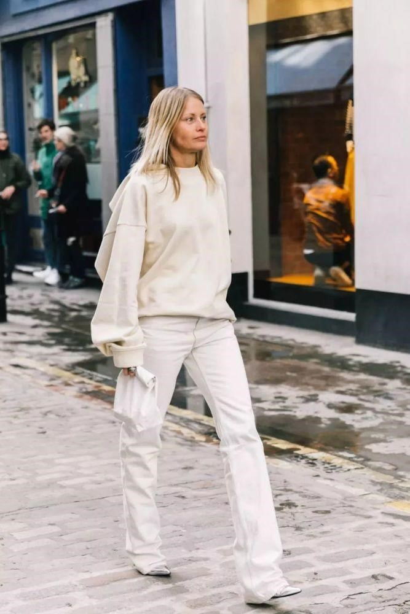
黑色阔腿裤是长腿利器，
让你拗出模特同款比例，
没人敢跟你比酷。
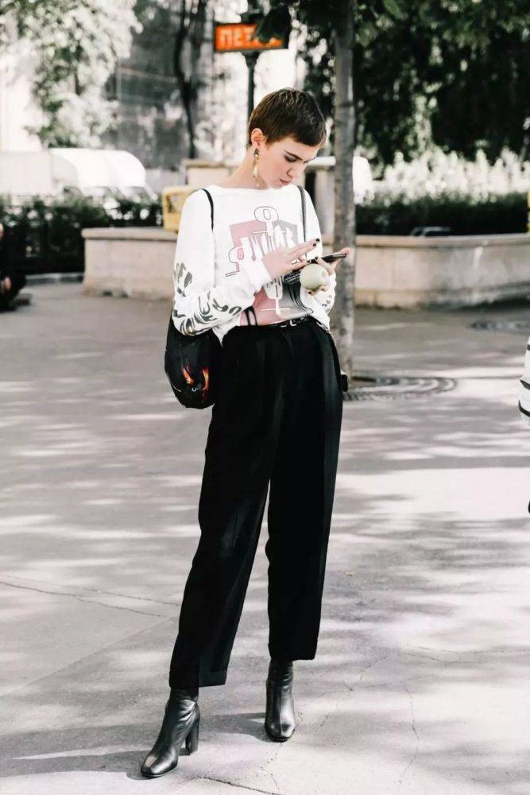
你也可以选择一些色彩裤装，
像格纹、焦糖色都比较复古，
超级上镜！
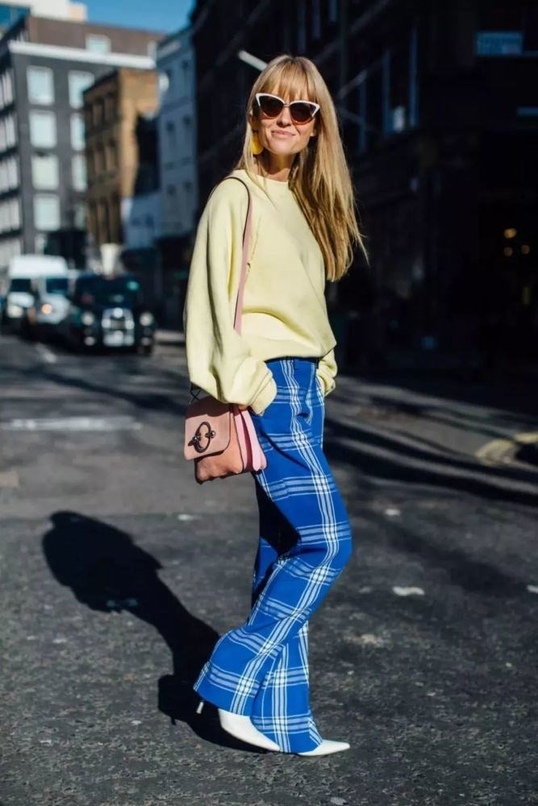
03
+西装
天冷了之后，
你可以用西装与卫衣混搭。
正式的西装搭配运动感卫衣，
酷得很随意～
如果你选择整身黑色，
就用一个亮色点缀，
老气沉闷的赶脚瞬间消失。

04
+风衣
用风衣内搭卫衣，
比英伦风更休闲，
比美式街头更有风度～
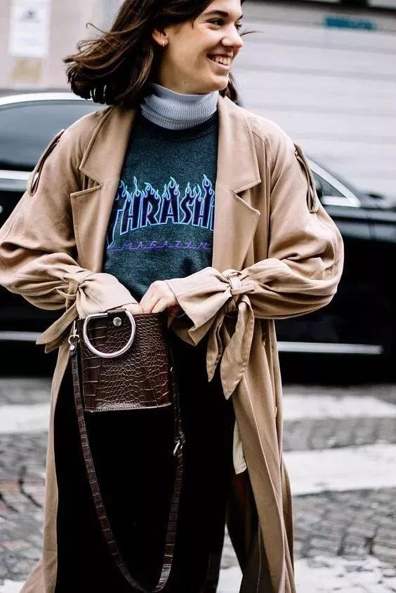
挺括的卫衣最抬气质，
内搭不要选择过于厚重的。
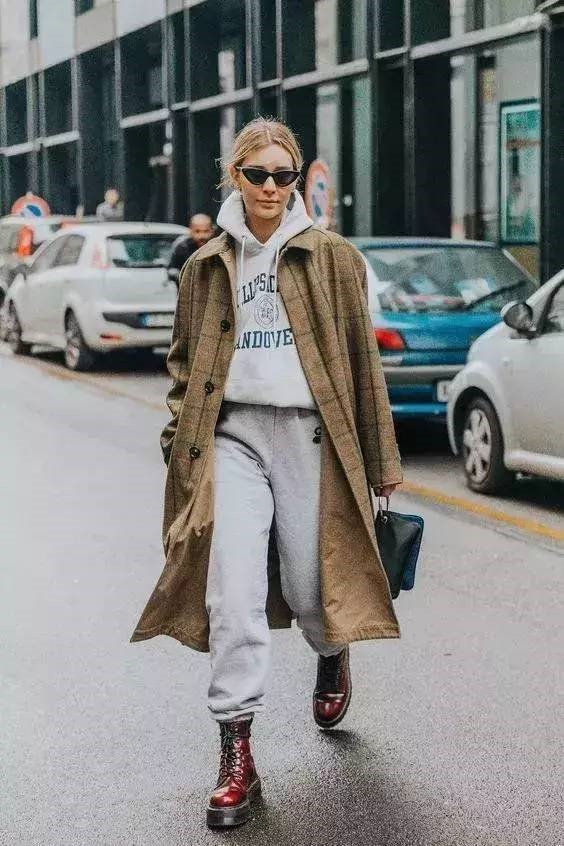